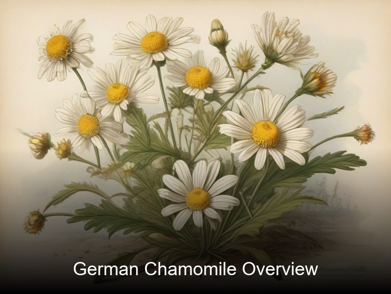
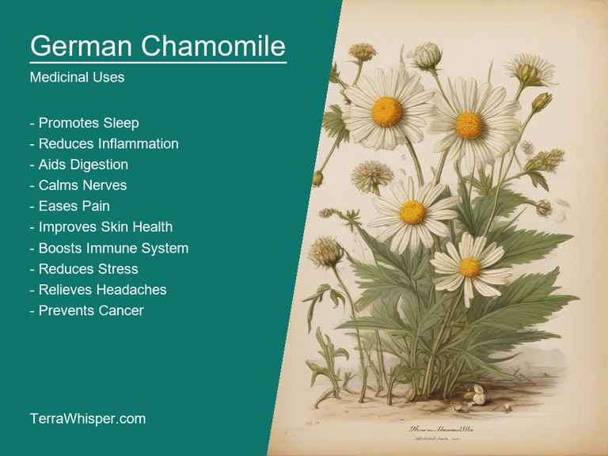
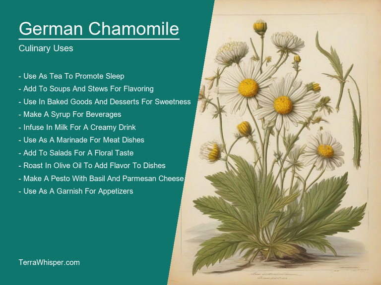
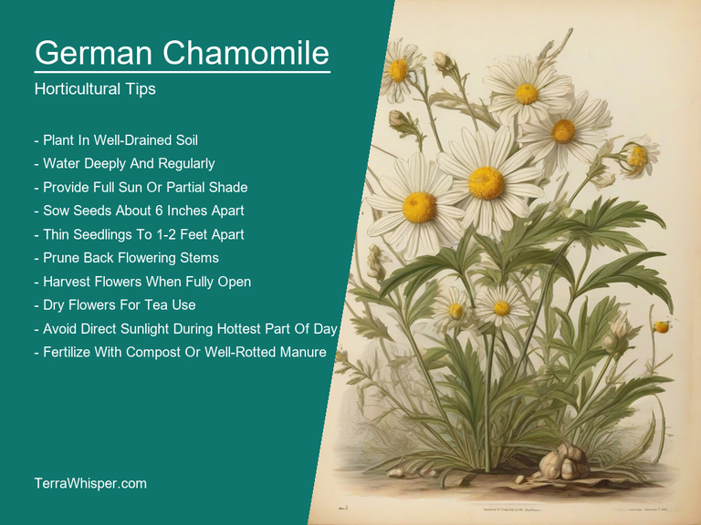
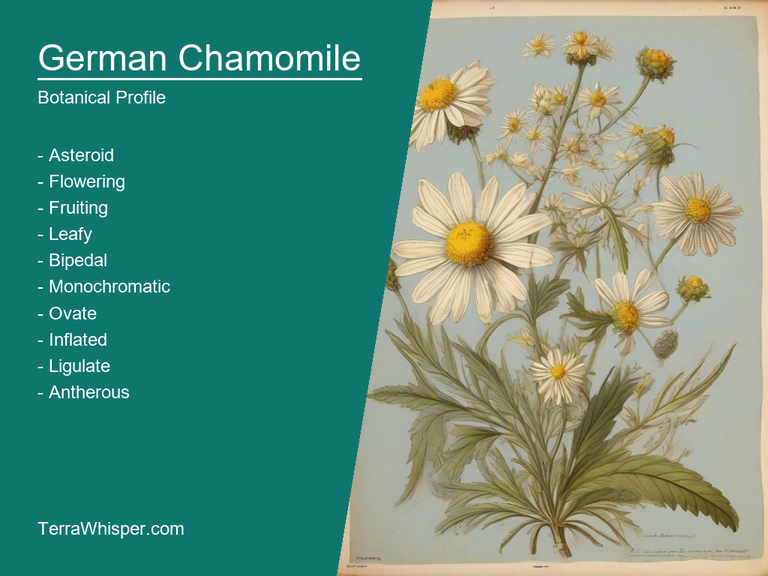
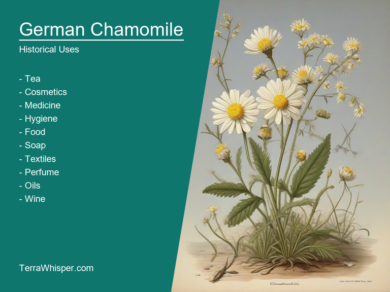

German Chamomile, scientifically known as Chamomilla recutita, is a versatile plant with medicinal and culinary uses, while also holding impressive horticultural qualities and providing aesthetic appeal in gardens. Its popularity stems from the variety of benefits it offers to those who use it as part of their daily life.
In terms of its medicinal properties, German Chamomile has a well-known reputation for reducing stress, alleviating indigestion, and easing muscle pain. Additionally, it possesses calming effects that can help induce sleep and provide relief from symptoms of cold and flu. It is also used as a natural remedy in certain skin conditions such as eczema and acne due to its anti-inflammatory properties.
As an ornamental plant, German Chamomile boasts bright yellow daisy-like flowers that are attractive to bees and other pollinators. Its low growing nature makes it suitable for various types of gardens, including rock gardens and borders. The plant also provides an aromatic touch when used in flower arrangements.
In this article, you will discover what are the medicinal and culinary uses of german chamomile. Then, you'll learn how to cultivate it, what is its botanical profile, and how it was used historically.
German chamomile (Chamomilla recutita) has many health benefits, including its calming effects on the nervous system, digestive aid, anti-inflammatory properties, and skin healing capacities. It is known for its soothing qualities, which have made it a popular remedy worldwide throughout history.
The following illustration lists the most important uses of german chamomile in medicine.

The medicinal constituents found in German chamomile include flavonoids, terpenoids, and essential oils, which provide its therapeutic effects. The most abundant active ingredient in this herb is the flavonoid apigenin, which imparts powerful antioxidant properties that help protect cells from damage caused by free radicals. Other noteworthy constituents include bisabolol and chamazulene, which contribute to its anti-inflammatory actions.
The most commonly used parts of the German chamomile plant for medicinal purposes are the flowers, leaves, and stems. These components are prepared through various methods such as infusion or extraction, which can be used in different forms like teas, oils, tinctures, salves, or capsules. The most popular form of consumption is in tea, where the soothing properties provide a pleasant taste and relaxing sensation after drinking.
While German chamomile has numerous health benefits, it may not be suitable for everyone. Some possible side effects include allergic reactions (such as skin rashes or breathing difficulties), increased sensitivity to sunlight, and interference with certain medications like sedatives and blood thinners. Individuals with known allergies to other plants in the Asteraceae family should exercise caution when using chamomile products.
To ensure safe usage of German chamomile, it is essential to consider specific precautions. Consult a healthcare professional before starting any treatment regimen if you have an existing medical condition or are pregnant or breastfeeding. Pay close attention to potential drug interactions, as it can affect the efficacy and safety of other medications. Lastly, avoid using chamomile products if allergic symptoms appear or if the product's quality seems poor; always purchase from reputable sources.
German Chamomile (Chamomilla recutita) is commonly utilized within the culinary world for its unique flavor profile and numerous health benefits. As an expert chef, I can highlight five important aspects regarding this herb's culinary aspect.
The following illustration lists the most common uses of german chamomile for culinary purposes.

German Chamomile offers a versatile range of uses in cooking, including infusing teas, garnishing salads or dishes with its petals and using the flower heads for aromatic touches in soups and sauces. It can also be added to herbal-infused oils and vinegars.
The delicate floral essence of German Chamomile is characterized by a subtle mixture of spicy, sweet, and earthy notes. Its aromatic profile brings depth to dishes without overpowering other flavors.
Several edible parts make this herb ideal for cooking - from the flower heads to the leaves and stems. The entire plant can be employed; however, the flower heads are typically preferred due to their intense aroma and flavor.
When using German Chamomile in culinary preparations, keep a few tips in mind. For instance, avoid overcooking its leaves to prevent losing their delicate taste, ensure proper drying of the flower heads for optimal storage, and consider pairing it with ingredients like citrus fruits or honey to enhance its flavor.
Despite its popularity, be aware that German Chamomile may cause allergic reactions in certain individuals due to its similarity to other plants in the Asteraceae family, which include ragweed and chrysanthemums. Additionally, excessive intake or use of concentrated forms may potentially trigger undesired effects.
German Chamomile, also known as Chamomilla recutita, is a versatile plant that can be grown easily and successfully. As an expert gardener, here are some tips to help you cultivate this unique herb in your garden.
The following illustration lists the most important tips to cutlitvate german chamomile.

To grow German Chamomile, start with fresh seeds or plant division in well-drained soil, ideally with a pH between 5.6 and 7.2. Prepare the area by clearing it of weeds and other unwanted plants, ensuring you are ready for these to replace those pesky intruders. The ideal spacing between each plant should be around 30cm in all directions. Germination will take place within two weeks after sowing seeds or transplanting dividings, depending on the conditions.
German Chamomile thrives best in full sun to partial shade and prefers temperatures ranging from 18°C to 24°C (65°F to 75°F). The plants do require regular watering to keep them hydrated but mustn't be overly saturated, as this could lead to rotting of the roots. Soil with adequate nutrients is recommended and an annual application of organic matter such as compost or manure can help promote growth and overall health.
To maintain your German Chamomile plant, deadhead flowers regularly, especially during the blooming season, which runs from mid-summer to early fall. This will encourage more flowers and increase the chances of self-seeding, a desirable characteristic in this herbaceous perennial. Moreover, removing weeds around the base of your plants is crucial for their healthy growth. In late autumn or early spring, after flowering has ceased, you can cut back the dead stalks to make room for new foliage and flowers next season.
As a gardener, growing German Chamomile (Chamomilla recutita) is quite enjoyable given its ease of cultivation and benefits from both an aesthetic and practical standpoint. With proper care and attention to these horticultural aspects, you are on the right track towards successful harvests of this valuable herb.
the Eastern German or Russian Chamomile (Chamomilla apula) which mainly has less aromatic scent and smaller flower heads compared to German Chamomile, while the Western German Chamomile or Austrian Chamomile (Chamomilla gumillae), displays larger flower heads.
The following illustration display the botanical profile of german chamomile.

German Chamomile is an annual or biennial plant, commonly found in the northern regions of Europe and Asia. It prefers sunny locations with well-drained soils and can grow up to a height of 18 inches. The plant has slender stems supporting small, daisy-like flower heads measuring approximately 2 centimeters wide. These blooms come in shades of yellow and white, with a central disc of tiny tubular flowers surrounded by numerous ray florets. German Chamomile is a medicinal herb used for its anti-inflammatory properties and has been utilized as a tea or tincture for centuries to alleviate digestive issues and aid in relaxation.
The life cycle of Chamomilla recutita begins with the germination of seeds, followed by a juvenile vegetative stage where leaves are developed. During its second year, German Chamomile flowers, setting seeds that eventually mature into new plants. This annual or biennial plant completes its entire lifecycle in about two years before starting over.
German Chamomile or Matricaria chamomilla has a rich history in traditional medicine, dating back to ancient civilizations such as the Egyptians, Romans, and Greeks who used it for various ailments including digestive issues, menstrual cramps, sore eyes, and wound healing.
The following illustration lists the most well known historical uses of german chamomile.

Beyond its medicinal properties, German Chamomile also found use in divination practices. In medieval Europe and various historical societies, practitioners often interpreted dreams by holding flowers to enhance accuracy during prophetic visions or rituals. This unique combination of healing and spiritual beliefs made German Chamomile an essential part of ancient cultures.
Surrounded by numerous legends, German Chamomile's mystical aspects persisted even amid the advancements in scientific understanding of its effects on human health. One such myth associated it with fertility